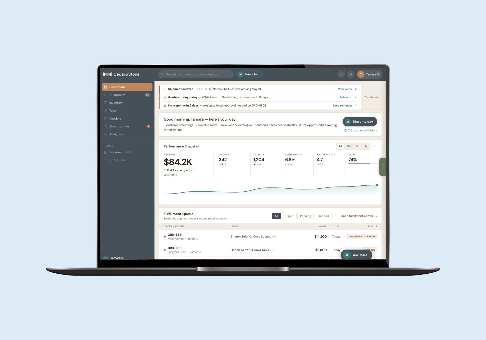
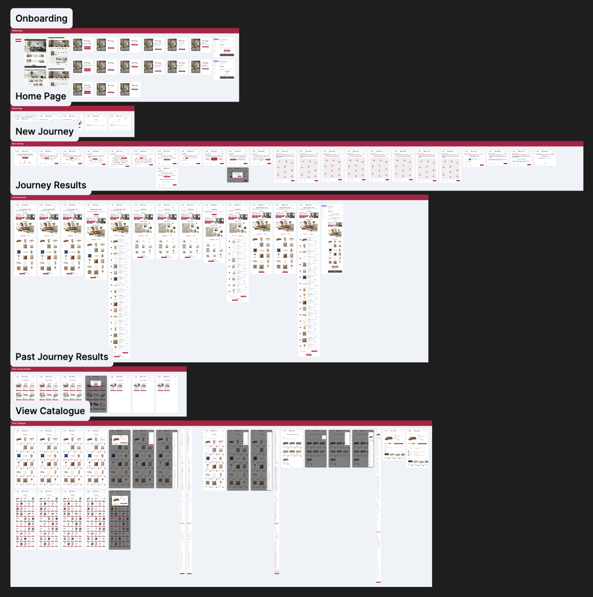
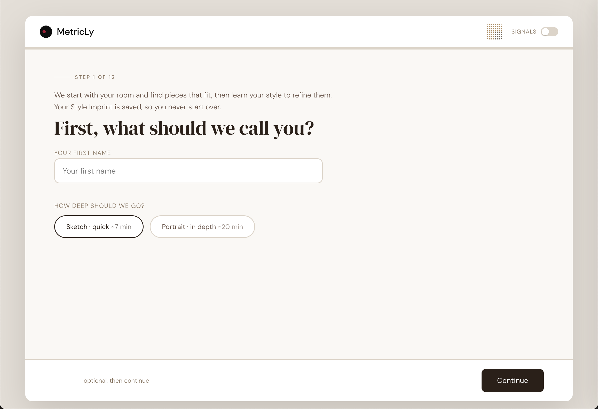
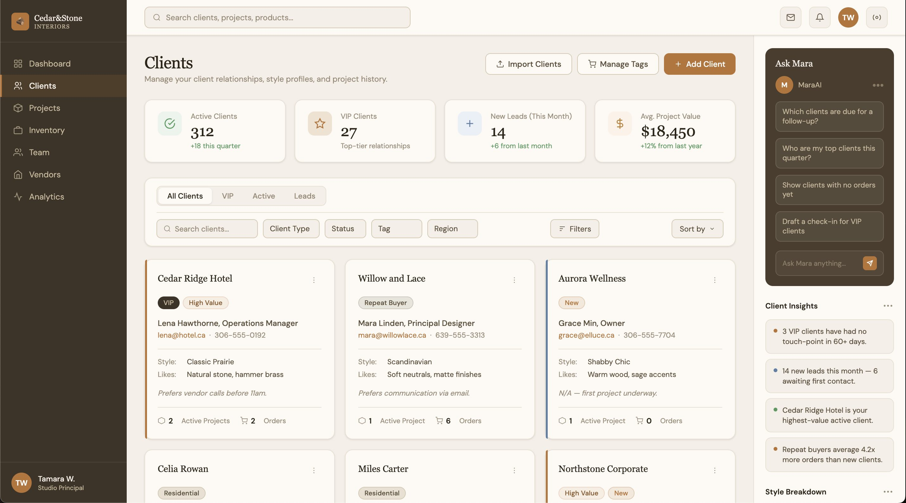
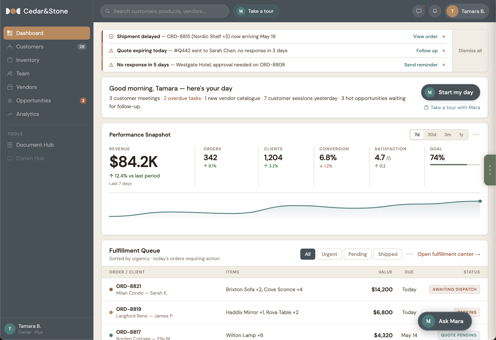
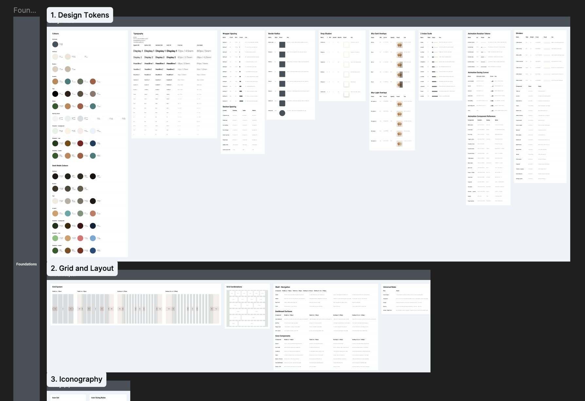
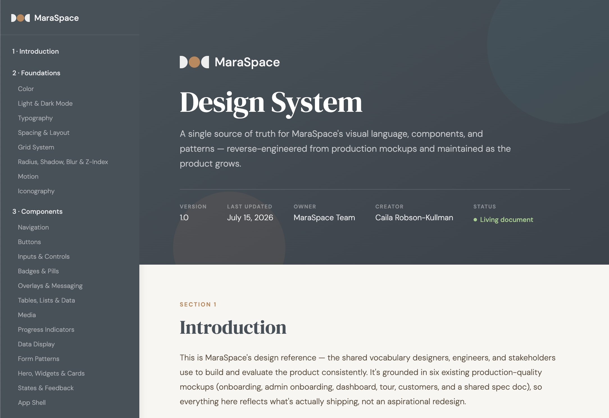
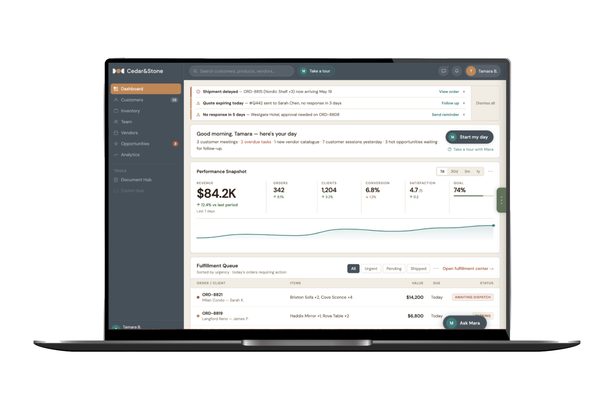

MetricLy & MaraSpace
UX/UI Design · Product Design · AI · Design Systems
Designed connected consumer and professional platforms for personalized AI home-furnishing discovery.

MetricLy began as an AI-powered consumer platform designed to help people discover their interior style, receive personalized product recommendations, and build shoppable rooms.
As the product evolved, the team identified an opportunity to support the professionals working behind those experiences with a professional Customer Relationship Management (CRM) platform, MaraSpace, designed to organize customers, products, preferences, and business workflows.
As the sole UX/UI Designer, I worked across both products, shaping the consumer experience while establishing the UX and visual foundation for the professional platform.
Role
UX/UI Designer
Company
MetricLy Technologies Corp.
Timeline
July 2025 – July 2026
Team
- UX/UI Designer
- Front-End Developer
- 2 Back-End Developers
- AI Researcher
- 2 Technical Consultants
- Polytechnic Development Team
- CEO
Focus
UX/UI · Product Design · Design Systems · AI · UX Research · Prototyping
Tools
Figma · Claude Design · Replit · Berry Component Library
My Contribution
I led UX and visual design across MetricLy and MaraSpace, translating product goals, research, business requirements, and technical constraints into scalable product experiences:
- Led UX research, evaluations, and usability testing
- Designed consumer, professional, and AI-assisted workflows
- Created user flows, wireframes, prototypes, and high-fidelity interfaces
- Designed and refined AI-powered interactions and recommendations
- Built and maintained shared design systems and component libraries
- Collaborated closely with developers throughout implementation
- Adapted designs as the product, requirements, and technical architecture evolved
Problem
How might we make personalized home-furnishing discovery easier for consumers while creating efficient tools for the professionals managing those experiences?
When I joined MetricLy, the focus was on building a consumer-facing product that helped users understand their personal design style and discover relevant home-furnishing products.
As the product developed, the team identified a need for a professional-facing system that could organize and manage the information generated through the consumer experience.
This created two connected products with different audiences and needs:
MetricLy - A consumer platform focused on personalized discovery.
MaraSpace - A professional CRM for retailers, vendors, interior designers, and builders.
The challenge was balancing two very different experiences within one connected ecosystem making discovery intuitive for consumers while making complex information efficient for professionals, with a shared design foundation that could support both.
Design Process
Research
I began by understanding the existing Minimal Viable Product (MVP), product documentation, business goals, technical architecture, and existing interfaces. As the product evolved, my research expanded to address both consumer and professional needs.
My UX activities included:
- UX evaluation
- UI audits
- User personas
- Usability testing
- Competitor research
- Product research
- User flows
- Stakeholder feedback
- Technical collaboration
This helped me understand not only what the products needed to do, but also how users would move through increasingly complex workflows.
Key Insights
- Different users need different experiences
- The consumer product needed to make design discovery feel simple, visual, and engaging.
- The professional product needed to make large amounts of information efficient to navigate, manage, and act on.
Personalization needs structure - MetricLy relied on information about a user's style, preferences, space, and product interests. That information needed to be represented consistently so it could support both recommendations and professional workflows.
Complex information needs clear systems - Customers, products, preferences, catalogues, analytics, and workflows introduced increasing information complexity. Clear navigation, hierarchy, filtering, forms, and reusable interaction patterns became essential.
AI needs to be understandable - AI was not simply a technical feature. Its recommendations needed to make sense within the user's workflow and provide enough context for people to understand and act on them.
The product needed to scale - As the platform expanded, designing individual screens independently would create inconsistency and slow development. A reusable design system became an important part of the product foundation.
What This Meant - The project evolved beyond designing individual interfaces. I needed to create a shared design foundation that could support different users, workflows, and product experiences without making them feel disconnected. This became the foundation for my work across MetricLy and maraSpace.
MetricLy
MetricLy is the consumer-facing experience.
I designed the journey from initial onboarding and style discovery through personalized recommendations and product exploration.
Consumer Journey
Onboarding → Style Quiz → Persona → Preferences → Recommendations → Product Discovery
The experience was designed around the idea that users could progressively communicate what they liked rather than needing to know how to describe their interior style upfront.
I explored different interaction models through sketching, wireframing, prototyping, and high-fidelity design.
The resulting experience included concepts for:
- Style discovery
- Preference mapping
- User personas
- Personalized recommendations
- Mood boards
- Product discovery
- Product alternatives
- Shopping experiences
MetricLy Personas
I developed personas to represent key user types across the MetricLy ecosystem, including homeowners and industry professionals.
The personas helped me better understand their different goals, behaviours, motivations, and pain points, while providing a reference point throughout the design process. I used them to evaluate concepts and workflows from different user perspectives and keep design decisions grounded in the people the product was intended to serve.
MetricLy Self-Testing & UI Audit
To evaluate the existing MetricLy experience before further iteration, I conducted a structured self-test of the application alongside a full UI audit.
I evaluated the product from multiple user perspectives, using the personas and usability test scenarios to walk through key experiences including the Style Quiz, Persona Results, Shop, Scan, See, Social, Style Boards, and logged-in workflows.
Findings
The evaluation showed that MetricLy had a strong foundation, particularly in its engaging Style Quiz, personalized Persona Results, visual design direction, and potential for AI-driven discovery.
However, the experience also contained significant usability and UI issues that could undermine user confidence. These included inconsistent components and interaction patterns, broken or incomplete functionality, unclear messaging, accessibility barriers, and responsive layout problems across smaller devices.
The audit also identified opportunities to improve navigation, catalog and filtering experiences, saved-content persistence, Style Board functionality, and the consistency of buttons, typography, colours, containers, and interactive states.
The findings were documented and prioritized to provide a clear set of recommendations for the next iteration of the product.
MetricLy Quiz Sketches
Early sketches explored the structure and flow of the MetricLy style quiz before moving into digital wireframes and UI design. These sketches helped define the question types, answer selection, progression, and overall quiz experience.
I used the sketches to quickly explore different approaches, identify potential usability issues, and establish the foundation for the final quiz flow.

MetricLy Figma File
The Figma file contains the full UX/UI design work for MetricLy, including user flows, wireframes, prototypes, visual design, components, design systems, and final application screens.
It documents the evolution of the product and provides a reference for how the experience was designed and organized across the platform.

MetricLy Quiz Redesign

MaraSpace
As the product expanded, I designed maraSpace as a professional-facing CRM. Unlike MetricLy's visual discovery experience, maraSpace needed to support information-heavy professional workflows.
The design focused on:
- Customer management
- Product information
- Preferences
- Catalogues
- Analytics
- Dashboards
- Navigation
- Filtering
- Forms
- Workflow management
This required a more structured and information-dense interface while maintaining the visual language established across the broader product ecosystem.
MaraSpace Design Iterations
I used Claude Design to rapidly explore different directions for MaraSpace, starting from my initial sketches and evolving them into more detailed interface concepts.
These iterations allowed me to quickly test layouts, workflows, and visual approaches before refining the strongest directions in Figma. The process helped bridge early exploration and final UI design while keeping the product grounded in the original UX thinking.



MaraSpace Design System
I developed and maintained the MaraSpace design system, creating reusable foundations for typography, spacing, layout, components, responsive behaviour, and interaction patterns.
The system helped keep the CRM experience consistent as new features were designed, while making it easier to scale the product and collaborate with developers.


AI & Design Workflows
AI was embedded into the product concept itself, but it also became part of my design process.
I explored how AI-generated recommendations and personalized information could be presented in ways that felt useful and actionable rather than opaque.
I also experimented with AI-assisted design workflows using Claude Design and Replit.
These tools allowed me to move more fluidly between design exploration, existing product interfaces, and implementation. Claude Design was particularly useful for inspecting existing interfaces and working closer to the realities of the built product.
This helped create a tighter connection between design decisions and implementation constraints.
Iteration
The work was highly iterative rather than linear.
Research → Sketch → Wireframe → Prototype → Test → Feedback → Redesign → Implementation
I worked continuously between research findings, product requirements, technical constraints, stakeholder feedback, and implementation considerations, collaborating closely with development, technical consulting, product leadership, and the research team.
Because the product was actively evolving, design decisions often needed to adapt alongside changes to the product and technical direction.
Final Design

Two Products, One Connected Ecosystem
The final product evolved into two connected experiences designed around different users and workflows.
MetricLy is the consumer experience for understanding personal style and discovering relevant home-furnishing products:
Style → Persona → Preferences → Recommendations → Products
MaraSpace is the professional CRM for managing the customer, product, and preference information generated across the ecosystem:
Customers → Products → Preferences → Data → Professional Workflows
Together, the products connect consumer discovery with professional workflows, allowing preference data generated through MetricLy to support the broader maraSpace experience.
I translated the designs into working product experiences while collaborating closely with developers and working within the technical constraints of the evolving platform. I also established reusable components, patterns, and design system foundations to support consistency across both products and future development.
The work established a scalable UX and visual foundation for two connected products, helping create clearer consumer discovery experiences and more structured professional workflows. The shared design system also provided a consistent foundation for the products to continue evolving.
Reflection
Working on MetricLy and maraSpace taught me how to design within an evolving product ecosystem. As the product expanded from a consumer-facing platform into a connected consumer and CRM experience, I adapted the UX, visual design, and design system while maintaining consistency across both products.
The project strengthened my ability to design for different users, balance user needs with technical constraints, build scalable systems, and collaborate closely with developers. It also reinforced that product design is not always about designing a fixed product, but creating a foundation that can evolve without losing clarity or consistency.
With additional iteration, I would continue refining the connections between MetricLy and maraSpace, validating the experiences with users, and evolving the design system as the products grow.